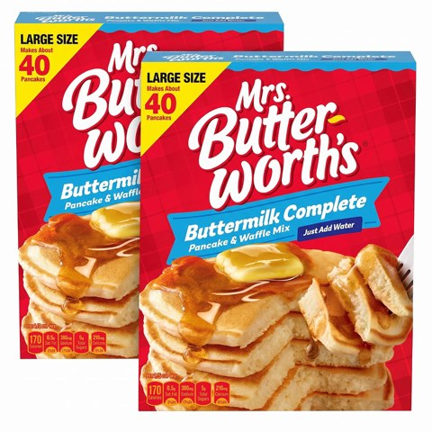
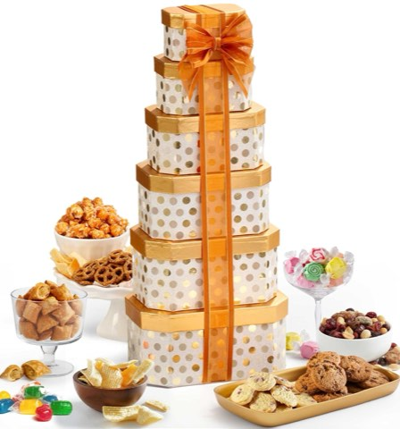
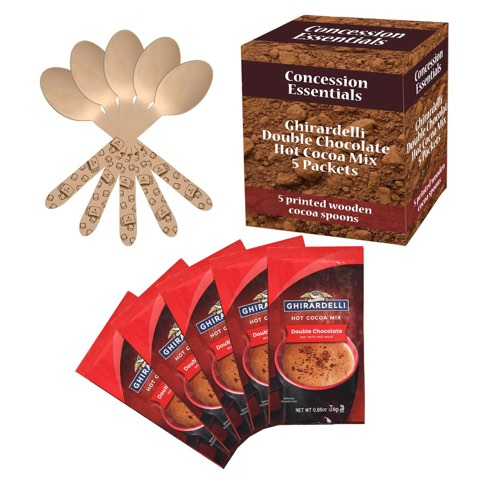
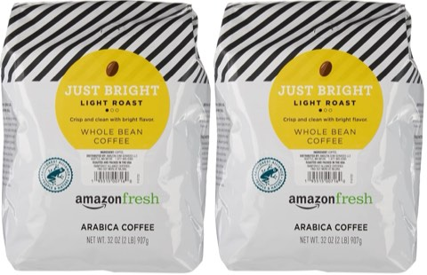

A gift basket does something a single gift card can't: it says you actually thought about this person, without asking for the kind of planning a fully custom gift takes.
The best ones feel curated rather than assembled. A handful of genuinely good items, chosen with a specific person in mind, beats a basket stuffed with random extras every time.
A coordinated color palette, one clear theme, and the discipline to stop adding "just one more thing" are usually what separate a basket that reads as thoughtful from one that reads as cluttered.

What Actually Makes a Basket Feel Special
A basket feels personal the moment it reflects something specific about the person receiving it, rather than reading as a generic holiday assortment.
A coordinated color story, a single scent family, and a short handwritten note usually do more for that feeling than tossing in extra items ever could.

How to Actually Build One
Start with one strong centerpiece, a candle, a mug, a book, a cozy blanket, and layer a handful of smaller matching items around it. That approach produces a far more polished result than filling a basket to the brim ever will.
Simple, coordinated packaging usually reads as more expensive than it actually was, which is part of why restraint tends to look better than abundance here.

23 Gift Basket Ideas to Build This Year
1. Luxury Christmas Gift Basket
When you want something that genuinely feels special, fewer and better items will always beat a basket crammed with everything the store had on sale.
Pick one premium centerpiece, a cashmere throw, a high-end candle, a genuinely good bottle of something, and build everything else around it. That keeps the whole presentation clean and intentional instead of busy.
Sometimes luxury is just one excellent centerpiece: a plush keepsake, a tin of good treats, a candle worth lighting, tied together simply. That beats ten mid-tier premium items all competing for attention.

2. Christmas Treats for a Friend Basket
Not every basket needs a complicated theme behind it.
A simple friendship basket, built around their favorite snacks, coffee or tea, cozy socks, a candle, and a handwritten card, covers everything that actually matters.
That handwritten note does most of the heavy lifting. One specific, genuine line about the friendship can make an otherwise modest basket feel far more meaningful than anything inside it.

3. Christmas Breakfast and Brunch Basket
Anyone who treats a slow weekend morning as sacred will appreciate a basket built around exactly that.
Pancake or waffle mix, maple syrup, coffee, tea, jam, honey, biscuits, chocolate, and a small serving board cover the essentials. A handwritten brunch recipe is a nice, optional personal touch.
This one doubles well as a shared family gift, since a whole household can enjoy it together on the same slow morning.


Mrs. Butterworth's Complete Buttermilk Pancake and Waffle Mix, 32 oz, Pack of 2
Shop on Amazon4. Christmas Homebody Basket
This basket is about as close as a container can get to feeling like an actual hug.
A soft blanket, a candle, slippers, tea, cookies, a mug, and a small book or journal cover the basics. Keeping the basket in cream, beige, soft green, and warm brown instantly makes the whole gift feel more coordinated and a little luxurious.
Even scaled down to one wrapped gift, a snowflake pick, and a sprig of greenery by a sunny window, it still captures that quiet, unhurried feeling the theme is going for.

5. Christmas Garden Lover Basket
For someone who genuinely loves plants, this idea reads as especially personal.
Gardening gloves, seeds, plant markers, a small pot, hand cream, gardening scissors, and a gardening journal build a basket that's actually useful, not just decorative.
Match the seeds and plants to the recipient's real climate and experience level. That matters more than picking something purely because it looks charming in the basket.

6. Christmas Movie and Snack Basket
Taking movie night a step further turns a few snacks into a full, complete experience.
Popcorn, candy, chocolate, hot chocolate, cozy socks, and a blanket form the base, and three handwritten movie recommendations finish it off. Labeling each one by mood, funny, classic, romantic, lets the recipient pick based on how they're actually feeling that night.
A ribbon-tied basket with a gingerbread cookie, peppermint-dusted candies, and a few snowflake picks tucked in works especially well for anyone who leans sweet over salty.

7. Personalized Christmas Gift Basket
Personalization doesn't actually require monogramming every single item inside the basket.
It works better to start with the recipient's genuine favorite things: seeds, gloves, and a small planter for a gardener, a kitchen-themed basket for a cook, a reading-heavy basket for someone who's always got a book going.
A basket embroidered with someone's actual name, holding a small plush toy, a candy cane, boxed chocolates, and a scented candle, is about as personal as a gift basket gets.

8. Christmas Morning Family Basket
One basket the whole family can share solves an entire household's gift list in a single gesture.
A curated spread of gourmet treats, preserves, mulled wine spices, artisan cookies, dried fruit, wrapped with greenery and ribbon, feels like something to gather around on Christmas morning rather than a stack of individually wrapped presents.
This works especially well when one shared gift for the household makes more sense than buying something separate for every single family member.

9. Christmas Baking and Cooking Basket
For someone who genuinely loves time in the kitchen, a useful basket will always outperform a pile of novelty gadgets.
Real tools, not one-off gimmicks, should make up the core here. A small cutting board can even stand in for the traditional basket itself, giving the recipient something they'll keep using long after the holiday food is gone.
Even scaled back to a few wrapped items tucked into pine branches with a pinecone underneath, it still reads as a finished, considered gift.

10. Christmas Candle and Cozy Basket
This idea is a natural fit for anyone who's into home decor.
One beautiful candle works as the centerpiece, with matches, fuzzy socks, tea, chocolate, and a small decorative object filling in around it. Stick to a single scent profile. A few competing scents can turn the whole basket into the olfactory version of a crowded department store.
A lit candle, a festive mug, a tin of shortbread, foil-wrapped chocolates, fuzzy socks, and hand cream, tied with a deep red bow, brings the whole idea together.

11. Christmas Spa Basket
The right handful of items can turn a simple basket into a genuine mini spa experience.
Bath salts, shower steamers, hand cream, body scrub, face masks, a candle, and a soft headband all work well together, kept inside simple, coordinated packaging. A restrained color palette keeps it from looking like a random grab of beauty products.
Amber glass bottles of oil and lotion, a few small gold-lid jars, and some dried berries tucked into a woven basket, plus one small personal touch, reads as genuinely boutique.

12. Book Lover Christmas Gift Basket
The real foundation of this basket is starting with one book the recipient will genuinely enjoy.
A reading light, a bookmark, cozy socks, tea, hot chocolate, and chocolate round out the rest. Choose the book around their actual interests, a thriller for a mystery reader, a love story for the romance fan, a cookbook for the person who loves cooking, rather than picking a personal favorite of your own.
A basket of wrapped books nestled in pine branches and pinecones by the tree does the job without a single visible title needed.

13. Christmas Breakfast in Bed Basket
For something with a more romantic feel, a breakfast-in-bed theme does the job especially well.
Coffee, tea, pastries, jam, honey, chocolate, a small tray, and a handwritten note build the core gift, and a small vase of flowers or greenery finishes it off. The tray is the clever part. It gets genuine reuse long after the holiday ends.
Tartan napkins, a jar of golden syrup, cranberry preserves, a stack of pancakes, and a cinnamon stick or two, arranged in a woven basket with a sprig of pine, sums up the whole idea in one image.

14. Gourmet Snack Christmas Gift Basket
This option works well even for someone you don't know especially well, while still feeling thoughtful rather than generic.
Choose several elevated snacks and prioritize quality over quantity. Six genuinely excellent items will look and feel better than fifteen random ones. Anything refrigerated or perishable needs to be delivered and stored carefully, kept cold, and handled promptly.
A red tin stamped with a festive phrase and filled with English muffins, preserves, coffee, and banana bread reads like something from an actual bakery gift shop rather than a quick grocery run.


Broadway Basketeers Towering Gift Boxes with Snacks and Treats, 6 Boxes
Shop on Amazon15. Christmas Cookie Gift Basket
Sometimes cookies really are the entire solution.
A basket filled with homemade or specialty Christmas cookies, plus chocolate, caramel, peppermint treats, and a festive mug covers the essentials. Packaging different cookies in small clear bags tied with ribbon makes the whole basket feel like a collection of individual little gifts.
This idea suits neighbors, teachers, coworkers, and extended family particularly well, since it doesn't require knowing someone's specific preferences.

16. Hot Tea Christmas Gift Basket
For the tea drinker in your life, a warm, simple collection goes a surprisingly long way.
Several tea flavors, honey, lemon candies, biscuits, and a pretty mug form the base, and loose-leaf tea with a glass or ceramic infuser pushes the whole basket toward something more luxurious.
A soft, natural palette, cream, sage, brown, muted red, keeps the basket looking genuinely beautiful rather than like a holiday-aisle grab bag.

17. Christmas Breakfast Gift Basket
Gift baskets don't have to stay limited to afternoon treats.
Pancake mix, maple syrup, jam, coffee, tea, biscuits, honey, and a kitchen towel build a solid breakfast basket, and a handwritten recipe card for a favorite Christmas breakfast adds a more personal touch.
This version works especially well as a family gift, since everyone in the house can enjoy it together the same morning.

18. Christmas Movie Night Basket
This one practically builds itself.
Popcorn, chocolate, candy, cozy socks, hot chocolate, and a soft blanket cover the essentials, with a small card listing a few recommended Christmas movies as the finishing touch.
A basket loaded with popcorn, a few classic candy bars, canned soda, and a pair of headphones, wrapped in a soft throw, communicates "cancel your plans" better than any card could.

19. Self-Care Christmas Gift Basket
December gets talked about as relaxing far more often than it actually feels that way once it arrives.
Bath salts, body lotion, a candle, face masks, fuzzy socks, lip balm, and herbal tea build a small escape. Stick to one calming scent family, lavender, vanilla, eucalyptus, rose, to keep the whole basket feeling coordinated.
A handwritten note tucked in alongside everything else often adds more warmth than one more product would.

20. Christmas Baking Gift Basket
This idea works especially well for anyone who treats December like an unofficial baking competition.
Building the basket around baking supplies and a few homemade treats gives it a genuinely useful feel. One homemade cookie included alongside the supplies makes the whole gift feel more personal than a straight shopping haul.
A wire basket filled with oven mitts, colorful spatulas, a whisk, cookie cutters, and small jars of sprinkles looks genuinely useful the moment it's opened.

21. Hot Chocolate Christmas Gift Basket
This one feels festive without requiring much of a budget at all.
Hot chocolate mix, mini marshmallows, peppermint sticks, chocolate squares, and a cute mug build the base. Colorful toppings and a holiday movie card work well for kids, while gourmet chocolate and a more refined mug suit an adult recipient.
Two mugs, a bag of cocoa mix, a twine-tied jar of marshmallows, and a few candy canes poking out, finished with a big red bow, hits the mark almost every time.


Ghirardelli Double Chocolate Hot Cocoa Mix Packets, Concession Essentials
Shop on Amazon22. Coffee Lover Christmas Gift Basket
For anyone who becomes noticeably more pleasant after their first cup of coffee, this basket pretty much answers itself.
A good bag of coffee, a mug, flavored syrup, and biscotti form the core, and a French press or reusable tumbler makes a strong centerpiece for a more premium version. Choose a coffee they already enjoy. That matters more than reaching for the strongest roast on the shelf.
A kraft box with a scarf wrapped around the mug, a bag of biscotti, and a jar of cinnamon sugar tucked beside a pine sprig reads as considered without much actual effort.


Amazon Fresh Just Bright Light Roast Whole Bean Coffee, 32 oz, Pack of 2
Shop on Amazon23. Cozy Christmas Gift Basket
For anyone who considers staying home a perfectly reasonable weekend plan, this is the easiest basket of all to put together.
A soft throw blanket, fuzzy socks, a scented candle, hot chocolate, marshmallows, and a Christmas mug cover the basics, with a small paperback or journal as an optional addition. Neutral packaging in cream, red, green, or warm brown keeps the whole look classic.
A woven basket spilling over with plaid and knit pillows, a red tartan throw draped over the side, and a small pine wreath tied to the handle captures the cozy, lived-in look this basket is going for.

Bedsure GentleSoft Sherpa Fleece Throw Blanket
Shop on AmazonFleece Throw Blankets, 50 x 60, 6 Pack
Shop on AmazonNone of This Requires a Big Budget
None of these twenty-three baskets need an elaborate shopping trip or a large budget to feel thoughtful. A clear theme, a coordinated palette, and one or two genuinely good items will usually beat a basket crammed with everything the store had available.
The baskets people remember years later are rarely the most expensive ones. They're the ones that show the giver actually paid attention to who they were shopping for.